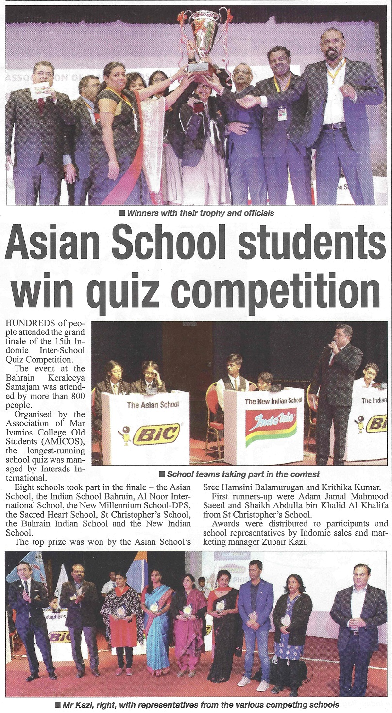
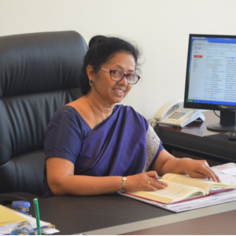

PROFILE
The Asian School is a privately owned secular co-educational institution officially opened on the 11th of May 1983 with the approval of the Ministry of Education, Kingdom of Bahrain. The institution was upgraded to the Secondary level in July 1992 and Senior Secondary level in December 2016. The school is affiliated to the Central Board of Secondary Education (CBSE), New Delhi and has around 4500 students from Kindergarten to Grade 12.
The school is located in a sprawlicampus at Tubli. The school building harea of 16,000sqm. with 133 classrooms. also home to the 2000 sqm. multi-purpKalam Memorial Auditorium, one of the bKingdom of Bahrain. The school also has a regulation size football ground and a basketball and tennis court built to international standards.
The school has sent more than 20 batches of students to the All India Secondary School Certificate Examination conducted by the CBSE and all the batches have graduated with excellent results.
For a detailed profile of the School Click Here
FOUNDER CHAIRMAN

Mr. JOSEPH THOMAS
Mr. Joseph Thomas belongs to Kerala, India. He did his schooling in the village of Marangatupilly and then graduated with Bachelors in Arts from St. Thomas College in Pala, Kerala. He went on to do his Masters in Arts from Indore University, Madhya Pradesh. He did his Bachelors in Education from Gorakhpur University in Uttar Pradesh.He began his career in education in 1970 when he joined as a Kindergarten teacher at Holy Cross School in Dimapur, Nagaland and then later worked as a Headmaster at the Government Middle School in Pimla, Nagaland. He subsequently joined as a lecturer of English at St. Thomas College in Benaras, Uttar Pradesh. In 1982 he left Benaras and came to Bahrain. His ambition was always to start a school of his own where his vision in the field of education could be put into practice. When he arrived in Bahrain, he saw potential for this dream to materialize and founded The Asian School on May 11, 1983 and has been running the school since inception in the capacity of Principal and Director until July 2009, when he moved to a purely management role.
Mr. Thomas is a dynamic personality who is a born educator and teaching was always his calling. He has relentlessly striven through every adverse moment of his life for the cause of education. He is the guiding force behind the institution. He believes in hard work, sincerity, dedication and perseverance and this has stood him in good stead and helped him achieve success in his life.
DIRECTOR

Mrs. ELIZABETH JOSEPH
Mrs. Elizabeth Joseph hails from the state of Kerala, India. She completed both her schooling and her graduation from Kottayam, Kerala with Bachelors in Arts from BCM College. She proceeded to do her Bachelors in Education from Gorakhpur University in Uttar Pradesh.Her teaching and administrative career spanning over 40 years began as a Nursery Teacher in Kottayam. She had over 6 years of teaching experience in St. Thomas School in Benaras, Uttar Pradesh before moving to Bahrain in 1983. She has served as Vice-Principal of the school from inception till July 2009, then as Principal till November 2012. She later moved in to the role of Director.
Her vast experience has helped her to discern closely the constantly evolving needs of schools and varied demands of a changing world that affect the development of a child. She sees tremendous potential and ambience for nurturing the individual needs of each student. It is her goal to pursue global standards that nurture holistic individuals through a student centric environment.
PRINCIPAL

Mrs. MOLLY TREASA MAMMEN
Mrs Molly Treasa Mammen hailing from and educated in Mumbai, graduated from the University of Bombay. She has majored both in English and in Education.Mrs. Mammen, with her penchant for the teaching profession, coupled with her endearing approach towards children holds vast experience in the field of education. Thus she has been advantageously positioned to render justice to her roles as Teacher, Head Teacher, Vice Principal and subsequently Principal. Her eventful journey in the teaching profession saw her as Headmistress at St. Lawrence School, Mumbai from June 1987 to May 1991. She joined The Asian School in 1992.
With belief in the uniqueness of every child, Mrs. Mammen is committed to engaging students in effective learning through positive research based instructional techniques. Furthermore, she strives to promote moral values, respect for culture, international consciousness and personal enhancement.
VICE PRINCIPAL

Mr. MARIA THADEUS WALTIN
Mr. Waltin believes in the concept of ‘inclusive approach and exclusive methods’ in order to nurture young minds into constructive thinking, thus creating global citizens.
VICE PRINCIPAL

Mrs. ELIZABETH SADAN
She began her teaching career in 1983 as a Primary Teacher in WEES English High School, Mumbai where she continued till 1989, when she relocated to Bahrain and joined The Asian School in the same year as a teacher. In 1994 she was promoted to the role of Academic Supervisor and in 2000 as Head Teacher. She has been Vice Principal of the Junior Section from the year 2012.
As an educator, her goal is to find the hidden treasure of ability in every child and help them to be the best versions of themselves.
best places in school
Outdoor football park
The Asian School is proud to be one of the only schools in the Kingdom to have a regulation size football ground.
KINDERGARTEN PLAY AREA
Gross Motor skills development is an important part of early childhood. The Kindergarten Play area has been designed and implemented with this in mind. It is a cordoned off space with safe play equipment which only Kindergarten children are allowed to use. The area is covered on 3 sides by the school building and also has a roof which provides essential shade from the sun.
LIBRARY
The school Library is a learning area where students and teachers have access to a wide range of resources in different formats in order to meet their teaching and learning needs. Students are encouraged to cultivate good reading habits and to use the library as an important center for learning. The school has excellent library facilities with over 11634 volumes of books, comprising prescribed texts, popular fiction and non-fiction and 1571 reference books. The school subscribes to 2 newspapers, 50 magazines and 3 periodicals.
MULTI-PURPOSE AUDITORIUM
The air conditioned Dr. Abdul Kalam Memorial Auditorium encloses an area of 1630 sq.m. and is currently one of the biggest auditoriums in the Kingdom of Bahrain. The auditorium has a VIP room with a separate entrance and direct access to the stage and also individual male and female Green rooms. The 200 sq.m. stage coupled with a seating capacity of 2500 is big enough to host the biggest of events. The MPH also houses 4 Badminton courts, 1 Volleyball/Throwball court, 1 Basketball court and 2 Table Tennis tables.
School Achivements
ASB were winners of the cheering trophy at the AMICOS Indomie Inter-school Quiz Contest 2019
The 16th edition of this event is held in association with Derek O'Brien Associates and was hosted by renowned quiz master Andrew Scolt. The competition was held on January 31 from 6 to 10 pm at the Indian School, Isa Town Bahrain. Asian School has bagged this trophy 3 years in row.
Afzal Junaid (Individual Champion), Aanandhkrishnan Kattiparambil, Atharuddin Mazharuddin and Erwin Denzil Godinho
Rhoda Ann Roby of Grade 8 D secured the First place at the APG School Echoes Speech Competition
Bill Gates
Reading is still the main way that I both learn new things and test my understanding.
A few books in school library

Space Encyclopedia (First Reference) by Dk Reissue Edition (2010)
Take your child on an incredible journey through our solar system and beyond with the new edition of this first reference for young space explorers. Help your child discover all about our universe: from comets and constellations, to black holes and the Big Bang, they'll explore awesome places and visit the far reaches of space. Watch as they gaze at the stars with the world's biggest and best telescopes and blast off on a mission to the moon to explore the gas giants Jupiter and Saturn. Plus, they'll find some astonishing answers to the big question: Is there other life out there? Full of bite-sized facts, curiosity quizzes and special 'weird-or-what' features kids will love getting their teeth into, there's lots to see and explore. It is perfect for homework or just for fun. Go ahead, let your children's imagination blast off into the cosmos!
BEST BUY LINK

Rabbit's Bad Habits: Rabbit and Bear
This beginning chapter book is delightfully weird, hilarious, and tender-hearted! (Imagination Soup)
A bear's kindness and generosity sweeten a grumpy rabbit's sour outlook in this wintry woodland encounter. Gough aims both high and low. On the one hand, he shows how the peaceable responses of Bear, equanimity unshaken despite discovering that her food stores have disappeared, to Rabbit's rude comments and behavior gradually work a profound change in his character—and on the other, in the course of their exchanges, he has the long-eared lagomorph deliver a clinically explicit, hilariously extended disquisition on why his kind eats its own poo. Bear goes even further, saving Rabbit from an attacking wolf and then, when he shamefacedly produces the food that he had (yes) stolen earlier, inviting him to join her for a moonlit picnic and a snuggle in her cozy den. The narrative, laid out in short, well-leaded lines, likewise snuggles on every page with Field's duotone cartoon scenes of the two furry figures meeting, parting, starting separate snowmen but ultimately coming together to finish one, and finally sharing a honeycomb and other goodies before bedding down in the warm den. When, showing a newly awakened sense of compassion, Rabbit wonders if the snowman is lonely, Bear has the perfect solution: "In the morning," she murmurs drowsily, "we can make him a friend." Young readers will come away with fresh insights into both poo and peacemaking. (Animal fantasy. 6-8) (Starred Review Kirkus)
Rabbit's Bad Habits is a breath of fresh air in children’s fiction, a laugh-out-loud story of rabbit and wolf and bear, of avalanches and snowmen. The sort of story that makes you want to send your children to bed early, so you can read it to them. (Neil Gaiman )
Rabbit's Bad Habits should become an instant modern classic. Stands shoulder to shoulder with Pooh and Toad. Cheeky, delightful and hilarious. (Eoin Colfer )
Whether it’s the grisly truth about leporidae eating their poo, the hilarious, touching dynamic between big, gentle Bear and cantankerous, selfish—but not irredeemable—Rabbit, or Jim Field’s blue-white, deft and atmospheric images, there’s much to love in this splendid little book. (The Guardian)
A delight, with super illustrations and a lovely story about friendship. (Independent on Sunday)
BEST BUY LINK
school news
-

school media links
